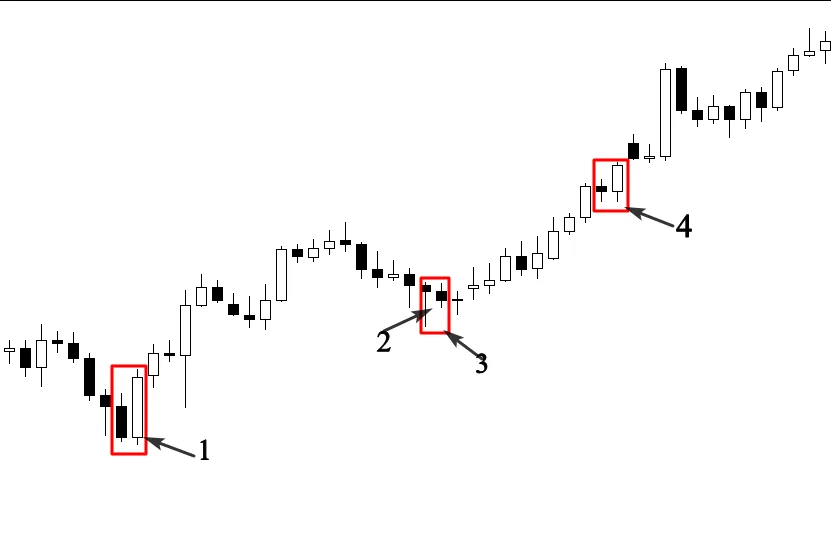

Now i think that you get some information about Japanese
candlesticks, you know the anatomy of each candlestick and the
psychology behind its formation, let’ take this exercise to test your
knowledge and see if you still remember all of the candlesticks we
talked about.
Look at the chart below and try to find the name of each candlestick
number, and the psychology behind its formation.
If you can easily identify these candlestick patterns, and you
understand why they are formed. You are on the right path.
But if you still struggle to identify these patterns, you will have to start
learning about them again till you feel like you master them.
Let’s try to answer the questions concerning the candlestick patterns
on the charts above:
1: Bullish Harami pattern (inside bar)
-The formation of this candlestick patterns indicates indecision in the
market, in other words, the market was consolidating during this
session.
2: Bullish Tweezers
The market was trading up, sellers tried to push the market lower, but
the reaction of buyers was more powerful.
This pattern represents the battle between sellers and buyers to take
control of the market.
3: Engulfing bar
-Sellers were engulfed by buyers, this indicates that buyers are still
willing to push the market higher.
4: Engulfing bar
5: Engulfing bar
6: Engulfing bar
7: Harami pattern
This pattern shows us that the market enters in a consolidation phase
during this session.so buyers and sellers are in an indecision period.
And no one knows who is going to be in control of the market.
Let’s take another exercise, look at the chart below and try to figure out these candlestick patterns:
